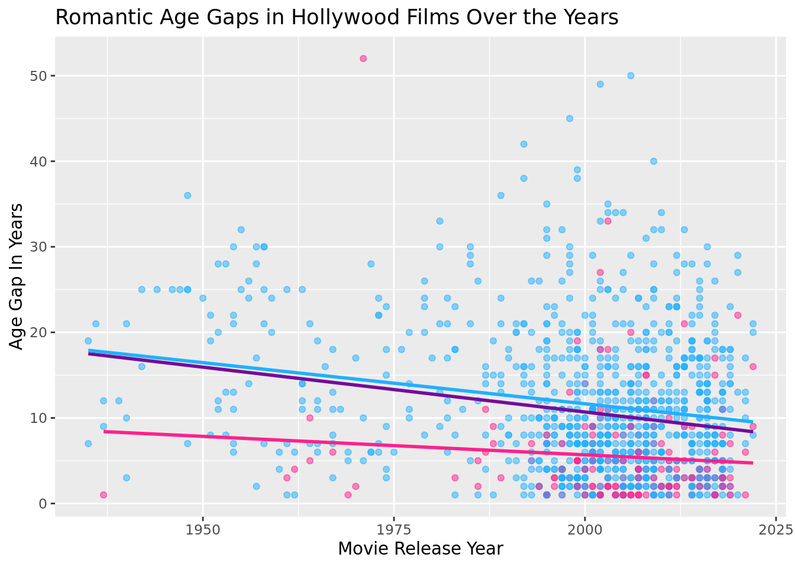
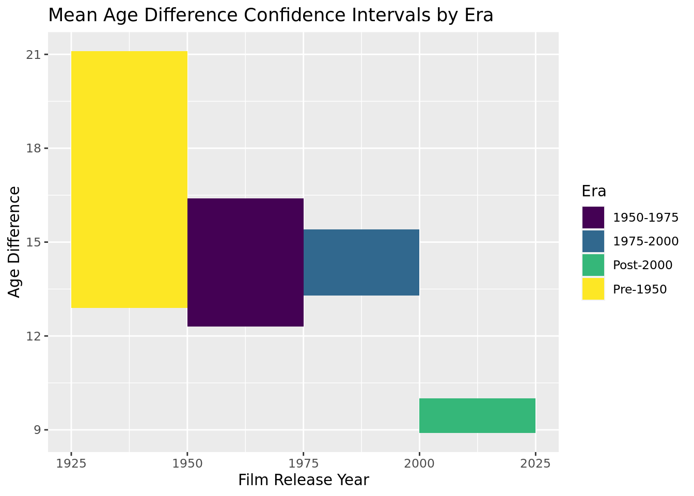
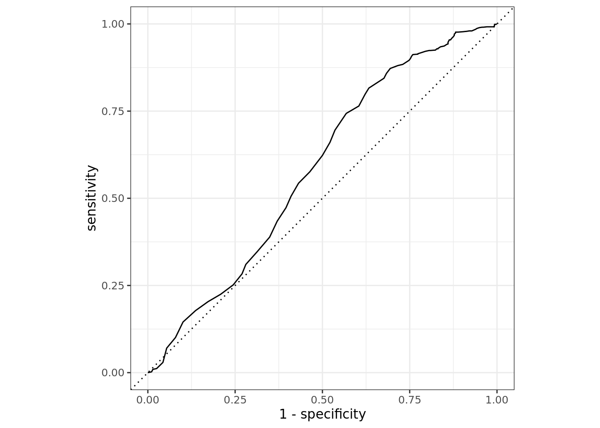

Does the age difference of actors in movies relationships decrease as the release date becomes more modern?
THAN: Report
Introduction and Data:
Our data comes from the Tidy Tuesday repositories on GitHub via the site “Data is Plural.”
The data set, Hollywood Age Gap, was compiled by Lynn Fisher and explores the age difference between actors playing couples in Hollywood movies which demonstrates the male-female power dynamic in the movie industry.
Hollywood Age Gap can be accessed here.
Hollywood Age Gap has information from upwards of 630 movies, sampled from films from 1935 to 2022, the dataset was most recently updated on February 14th, 2023.
Hollywood Age Gap, while mostly compiled by Fisher, is open source and in turn anyone can submit data to the dataset for consideration contingent on three rules:
- The actors are atleast 17 years old
- The actors are actually love interests in the film
- The characters can not be animated
Observations of the data set include:
movie_name: the name of the movie
release_year: the year the movie was released
director: the movie’s director
actor_1_name/actor_2_name: the names of the actors whose characters are in a relationship
actor_1_birthdate/actor_2_birthdate: the birthdates of the actors
actor_1_age/actor_2_age: the ages of the actors when the movie was released
age_difference: the difference between the ages of the two actors
Additional variables that were added include:
age_gap_cat: whether the age difference was greater than 15 years, or 15 years or less.
- 15 Years was chosen given that after 15 years the age gaps is large enough for the older partner to be the parent of the younger partner.
older_partner_gender: the gender of the older partner in the relationship
decades: what decade the film was released in
era: whether the film was released pre-1950, between 1950 and 1975, between 1975 and 2000, or post-2000.
Research Question:
Does the age difference between actors in movie relationships decrease as the movie’s release date becomes more modern?
Our research will attempt to determine whether the uncomfortable age gaps between male and female romantic interests in movies has been waning over time. This will tell us if criticism within the industry and from viewers has actually been effective in making a change on this issue.
In addition we will explore whether in cases where an age gap is present if the male or female member of the couple tends to be older.
Some other things to explore could be the trends of specific actors/actresses that may have experienced both sides of the age gaps, as well as how this trend exists in movies with multiple couples.
Exploratory Data Analysis

# A tibble: 2 × 2
older_partner_gender count
<chr> <int>
1 Female 215
2 Male 917# A tibble: 2 × 2
older_partner_gender mean_gap
<chr> <dbl>
1 Female 4.73
2 Male 11.7 The scatter plot above visualizes the age difference between actors in movie relationships over time. The observations are colored based on the gender of the older partner. The purple best fit line shows the trend of age gaps regardless of gender.
From the plot and summary statistics, we observe that in cases where an age gap is present, the older partner tends to be male (215 observations where the older partner was female, 917 where the older partner was male.) And in cases where the older partner is female, the age difference tends to be smaller than the age difference for couples where the older partner is male (mean of 4.73 years compared to 11.7 years respectively.)
Additionally, the majority of the observations appear in the last 40 years and there are not many observations from the 1930s and 1940s because the creation of Hollywood movies was just beginning.

The bar chart above groups movie observations into the decade that they were released. The plot shows that the proportion of films containing age gaps of over 15 years decreases over time.
In the 1940s, over 80% of films had a large age gap of over 15 years. This proportion could be attributed to World War II, which resulted in younger men enlisting in the military rather than staring in Hollywood films.
The box plot above visualizes the mean age difference in films by the five directors most represented in Hollywood Age Gaps. The plot shows that some directors, like Woody Allen and John Glen, when compared to the mean age difference of heterosexual couples in the dataset (\(\mu = 10.4\)) tend to produce movies with a larger than average age gap; whereas Mike Newell’s movies contain below average sized age gaps.

Unlike the data on heterosexual couples, overtime the age gaps shown in films depicting same sex couples has increased.
Methodology
Since same-sex couples have only begun to be shown in film in the last couple decades, we will filter the data set so that it only contains information about movies with heterosexual couples.
Prediction 1:
We predict that overtime the mean age gap between couples has decreased and that the proportion of movies with large age gaps today is less that it was in the past.
We believe this change could be attributed to criticism within the film industry
We will look at individual 25 year eras of film production, calculating the true mean age gap found in films produced during the years pre-1950, 1950-1975, 1975-2000, and post-2000. By comparing the confidence intervals produced either by bootstrapping or CLT (based on whether data fits CLT requirements), we can find a better understanding of how age gaps changed between each era.
We will also fit a linear regression model to the data, to see how well the year a film was released can predict the age gap found in the film. We will look at the r-squared of this model to show its strength and analyze the results significance in regards to our hypothesis that as the year becomes more modern age gaps decrease.
We will also fit a logistic regression model considering other factors that could help create a more accurate model, including the gender of the older partner, and the director of the film. To test the theory that director could play a role in the age gaps portrayed, we will fit a regression model to the observations from the five most common directors in the data set.
Further, we will preform a hypothesis test to determine whether our hypothesis that age gaps are smaller today than they were in the past is accurate, finding a p-value to assess our null hypothesis that the mean age gaps today are the same as those in the past.
Prediction 2:
We predict that the age difference is greater in couples where the older partner is male.
To investigate whether the age gap for couples where the older partner is male is greater than the age gap for couples where the older partner is female we will perform a hypothesis test on the difference in mean age differences.
Results
Bootstrapping and CLT of Mean Age Gaps
From the EDA scatterplot of age gaps in heterosexual couples, we observe that all three best fit lines are trending negatively, indicating a decrease in the age gaps over time. This observation will be explored further in the next section through the use of bootstrapping and CLT (based on sample size) to find the true mean of different eras in time.
In order to use the Central Limit Theorem, the sample size must be greater than 30 and the data must show independence. Hollywood Agegap was randomly sampled, meeting the independence requirement.
Pre-1950: \(n = 19 < 30\)
1950-1975: \(n = 87 > 30\)
1975-2000: \(n = 283 > 30\)
Post-2000: \(n = 766 > 30\)
Based on sample size, we can use CLT for all eras besides pre-1950 films where will use bootstrapping.
pre-1950
# A tibble: 1 × 2
lower upper
<dbl> <dbl>
1 12.9 21.1We can say with 95% confidence that the true mean age gap in pre-1950 films was between 12.9 and 21.1 years.
1950-1975
[1] 12.32864 16.38400We can say with 95% confidence that the true mean age gap in films released between 1950 and 1975 was between 12.3 and 16.4 years.
1975-2000
[1] 13.30298 15.40967We can say with 95% confidence that the true mean age gap in films released between 1975 and 2000 was between 13.3 and 15.4 years.
post-2000
[1] 8.901113 10.020558We can say with 95% confidence that the true mean age gap in films released after 2000 was between 8.9 and 10.0 years.
Analysis of Confidence Intervals

We can observe that over time, the upper bound of the interval has consistently decreased, and the lower bound (besides in the 1975-2000 era) has also decreased, indicating a decrease in the true mean of age gaps over time. This is consistent with what we observed in the scatterplot of age gaps in heterosexual movie couples.
Linear Regression Model: Year to Age Difference
[1] 0.04524371parsnip model object
Call:
stats::lm(formula = age_difference ~ release_year, data = data)
Coefficients:
(Intercept) release_year
231.0808 -0.1103 \(\widehat{Age Difference} = 231.0808 - 0.1103 * release\_year\)
Our linear regression model with release year explains roughly 4.5% variation of the variation in age gaps. This shows that there is not a direct correlation between age gap and the year a film was released but does indicate a negative correlation between age difference and year, supporting our hypothesis that the age difference between actors in movie relationships decreases as the release date becomes more modern.
Logistic Regression Model: Probability of a Large Age Gap

\(\widehat{Age Difference} = 231.0808 - 0.1103 * release\_year\)
Our linear regression model with release year explains roughly 4.5% variation of the variation in age gaps. This shows that there is not a direct correlation between age gap and the year a film was released but does indicate a negative correlation between age difference and year, supporting our hypothesis that the age difference between actors in movie relationships decreases as the release date becomes more modern.
Hypothesis Testing for Difference in Means
From the plot we observe that in cases where the older partner is female, the age difference tends to be less than the age difference for couples where the older partner is male. This is investigated in the following code chunk through hypothesis testing.
Null Hypothesis: the true mean age gap for couples where the older partner is male is the same as the true mean age gap for couples where the older partner is female.
\(H_o: \mu_m - \mu_f = 0\)
Alternative Hypothesis: the true mean age gap for couples where the older partner is male is greater than the true mean age gap for couples where the older partner is female.
\(H_o: \mu_m - \mu_f > 0\)
# A tibble: 2 × 2
older_partner_gender mean_age
<chr> <dbl>
1 Female 4.73
2 Male 11.7 \(\bar{x}_m - \bar{x}_f = 11.7 - 4.73 = 6.97\)
Warning: Please be cautious in reporting a p-value of 0. This result is an
approximation based on the number of `reps` chosen in the `generate()` step. See
`?get_p_value()` for more information.# A tibble: 1 × 1
p_value
<dbl>
1 0With a \(p-value < 0.001 > \alpha = 0.05\) we decide to reject the null hypothesis that the true mean age gap for couples where the older partner is male is the same as the true mean age gap for couples where the older partner is female and conclude that there is strong evidence to conclude the alternative hypothesis that the true mean age gap for couples where the older partner is male is greater than the true mean age gap for couples where the older partner is female.
Conclusion
- As the release dates of Hollywood films become more modern, the age difference between actors whose characters are in relationships has decreased.
- As films become more modern, the proportion of films with age gaps of over 15 years has also consistently decreased.
- It is significantly more common for the older partner in couples with an age gap to be male.